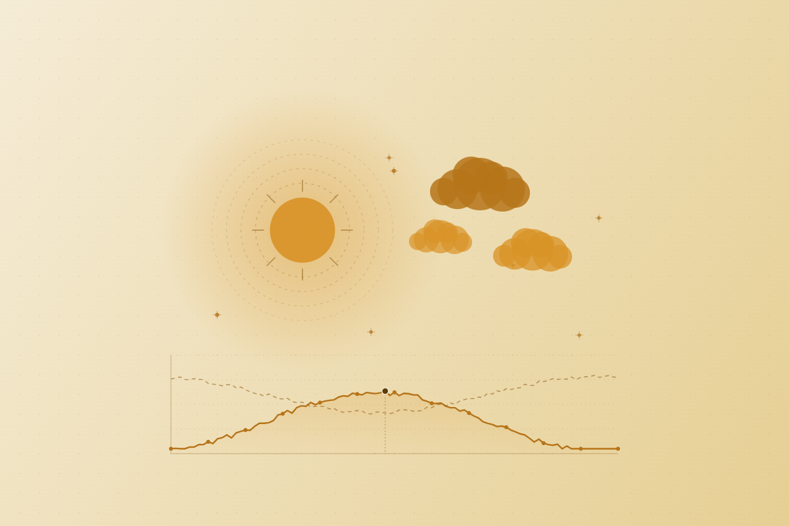

DATA ENGINEERING
IPMA Weather Pipeline: Automated Ingestion, Transformation & Monitoring
End-to-end data engineering pipeline delivering daily weather observations to a live Looker Studio dashboard
Python · BigQuery
dbt
GitHub Actions
Looker Studio
A production-grade data engineering pipeline ingesting hourly weather observations from 222 meteorological stations across Portugal via the IPMA public API. Implements a layered architecture (raw → staging → mart) with automated data quality testing, incremental batch loading, and daily scheduling - designed to power a continuously updating Looker Studio dashboard.
~4151
observations per day
222
stations monitored
8
automated quality tests
- Automated Incremental Ingestion: Python script calls the IPMA public API daily, fetching hourly observations from 222 stations across Portugal and appending raw batches to BigQuery - fully scheduled via GitHub Actions with zero manual intervention.
- Raw Layer Integrity: Append-only raw layer preserves the complete API response history, with an `ingested_at` timestamp on every row for full auditability and root cause tracing.
- Multi-Table Pipeline Architecture: Dual-table ingestion pattern: append-only observations and truncate-reload stations - reflecting the different update semantics of each source.
- Layered dbt Transformation: Two-layer dbt model (staging → mart) applying type casting, sentinel value nullification, wind direction decoding, and deduplication on natural key.
- Automated Data Quality Framework: 8 dbt tests covering null constraints, timestamp validity, and accepted ranges for all measurement fields - pipeline fails automatically if any test is violated.
- Production-Grade Scheduling: Full pipeline (ingest → dbt run → dbt test) orchestrated via GitHub Actions cron, with automatic failure notifications and run logs for full observability.
- Next Steps: Connect the mart layer to Looker Studio to deliver a live, auto-refreshing dashboard tracking temperature, precipitation, wind, and humidity trends across Portugal's 222 monitoring stations.

IPMA WEATHER PIPELINE